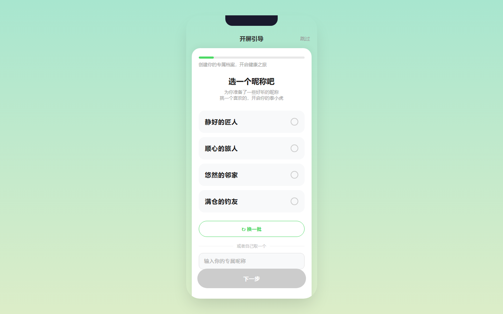
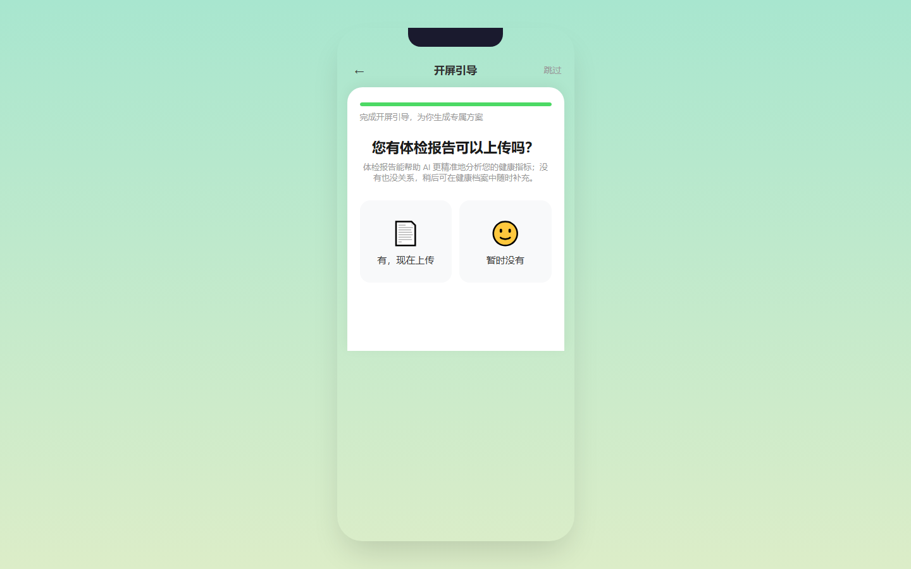

泰小虎开屏引导优化 — 产品需求文档（PRD）
版本 V1.0 · 2026-08-12 · 状态：已定稿
一、文档基本信息
| 字段 | 内容 |
|---|
| 项目名称 | 泰小虎开屏引导优化（随机昵称 + 体检报告前置询问 + 标题统一） |
| 创建时间 | 2026-08-12 |
| PM | （待填） |
| 技术 Owner | （待填） |
| 测试负责人 | （待填） |
| 文档状态 | 已定稿 |
历史修订记录
| 版本号 | 修订日期 | 修订人 | 修订内容简述 | 状态 |
|---|
| V1.0 |
2026-08-12 |
PM |
初版 |
已定稿 |
二、项目背景与目标
2.1 业务背景（痛点）
- 原开屏引导流程直接进入健康档案填写，缺少一个亲切化的「昵称」入口，用户感受不到产品人格，首屏冷冰冰。
- 体检报告步骤直接展示上传区，很多用户没有最近一次体检报告，反复询问「没有体检报告怎么办」，导致该步骤流失率偏高。
- 所有步骤的头部标题均显示为「评测」，与实际业务场景（开屏引导 / 健康档案初始化）不符，容易引起用户误解。
2.2 项目目标
- 业务目标：降低开屏引导流失率，提高档案创建完成率；消除无体检报告用户的焦虑。
- 用户目标：让用户一进入产品就获得一个亲切、吉利的昵称；明确告知没有体检报告也可以先完成建档；清楚知道自己正在完成「开屏引导」。
2.3 衡量指标（KPI）
| 指标 | 定义 | 目标 |
|---|
| 开屏引导完成率 | 完成建档用户数 / 进入 Step1 用户数 | 不低于原流程完成率 |
| 昵称步骤完成率 | 选择或自定义昵称后进入 Step2 用户数 / 进入 Step1 用户数 | ≥ 90% |
| 体检报告页流失率 | 进入 Step7 后未到达完成页用户数 / 进入 Step7 用户数 | 较旧版下降 ≥ 30% |
| 建档完成率 | 到达完成页用户数 / 进入 Step1 用户数 | 不低于原流程 |
三、业务流程与架构
3.1 本期范围与影响
| 维度 | 说明 |
|---|
| 涉及端口 | 用户端 App / 小程序 / H5 |
| 涉及模块 | 开屏引导、健康档案初始化 |
| 本期改动点 | 新增 Step1 昵称选择；Step7 改为「有 / 没有」前置询问；全站标题「评测」→「开屏引导」 |
| 已有-沿用 | Step2 性别、Step3 出生日期、Step4 身高、Step5 体重/BMI、Step6 睡眠、完成页逻辑 |
| 不涉及 | 商家端后台、回放、火山 SaaS 配置、平台运营后台配置 |
3.2 业务流程图
📎 权威来源：本流程图引自 onboarding-flow.html（当前线上原型 / 全链路主流程），依据已梳理确认的开屏引导主流程绘制，与 7 步结构保持一致。
3.3 信息架构
| 层级 | 职责 | 涉及内容 |
|---|
| 前端展示层 | 开屏引导页面渲染、用户交互、本地状态 | 昵称卡片、自定义输入、报告选择、上传组件、步骤进度、标题文案 |
| 业务逻辑层 | 建档流程编排、数据校验、接口调用 | 步骤推进、档案归档、体检报告上传、完成页跳转 |
| 数据层 | 持久化用户档案与上传记录 | 用户表、健康档案表、体检报告记录表、localStorage 昵称占用缓存 |
3.4 状态机与状态流转
本需求涉及的核心业务实体为「用户健康档案」。完整状态枚举：未建档、建档中、已建档。
建档状态流转如下：
| 起始状态 | 触发动作 | 前置条件 | 目标状态 |
|---|
| 未建档 | 进入开屏引导 Step1 | 首次启动且未填写健康档案 | 建档中 |
| 建档中 | 提交任意一步 | 该步骤必填字段已填写 | 建档中 |
| 建档中 | 完成 Step7（有报告上传 / 无报告直接完成） | 所有步骤已处理 | 已建档 |
| 建档中 | 点击「跳过」并确认 | 用户主动选择跳过 | 已建档（字段完整度按实际已填计算） |
四、功能需求详情
4.1 用户端 C 端开屏引导
本次对开屏引导共产生 3 类改动：
- 新增 Step1「昵称选择」页面；
- 改动 Step7「上传体检报告」页面，先询问用户是否有报告；
- 全局文案调整：所有步骤头部标题及进度文案中的「评测」统一为「开屏引导」。
4.1.1 开屏引导首屏（昵称选择） 本期新增
需求影响范围：首次进入 App / 小程序 / H5 且未建立健康档案的新用户。
涉及终端明细：iOS App、Android App、微信小程序、H5。
4.1.1.1 页面原型与交互示意

交互说明：
- 页面进入时默认展示 4 张随机昵称卡片；
- 点击卡片后卡片高亮并显示「✓」；
- 点击「换一批」重新生成 4 张不重复卡片；
- 点击输入框可手动输入昵称；
- 选中推荐卡片或输入合法自定义昵称后，「下一步」按钮由置灰变为可用。
4.1.1.2 详细逻辑规则
界面与展示规则
- 标题栏显示「开屏引导」，右侧保留「跳过」入口；
- 进度条显示 1 / 7（14.3%），进度文案显示「完成开屏引导，为你生成专属方案」；
- 主标题「选一个昵称吧」，副标题说明已为用户准备了一些好听昵称；
- 昵称卡片区域每次展示 4 条，采用「前缀 + 的 + 后缀」组合形式；
- 同一次展示的 4 条昵称后缀不重复，避免视觉重复；
- 卡片下方提供「换一批」按钮与自定义输入框，输入框 12 字上限并实时计数。
业务逻辑与边界条件
- 昵称总池由 99 个健康/长寿/福气/好眠等前缀 × 16 个自然后缀组合而成；
- 同一用户会话内已展示过的昵称不再重复展示；
- localStorage 中维护「已占用昵称」集合，避免不同用户在同一设备上被推荐相同昵称；
- 用户选择推荐昵称或完成自定义输入后，方可点击「下一步」；
- 若用户输入与本地已占用昵称重复，Toast 提示「该昵称已被使用，试试其他的吧」，并清空输入框。
4.1.1.3 列表字段表（昵称卡片）
| 字段名称 | 需求说明 | 备注 |
|---|
| 昵称文案 | 展示完整昵称，格式：前缀 +「的」+ 后缀 | 如「静好的匠人」「顺心的旅人」 |
| 选中态 | 用户点击后卡片边框变为绿色并显示「✓」 | 单选 |
| 主题来源 | 记录该昵称所属主题（长寿/顺遂/福气/喜乐/好眠/家和/盈满） | 仅本地展示使用，不显示主题标签 |
| 已占用标记 | 被选中或手动输入并提交后，加入 localStorage 已占用集合 | 同设备下不去重 |
4.1.1.4 功能按钮总表
| 功能名称 | 功能说明 | 备注 |
|---|
| 换一批 | 重新生成 4 张昵称卡片 | 同一会话内去重；池耗尽后允许重复 |
| 自己取一个 | 手动输入 12 字以内昵称 | 输入即启用下一步；重复时 Toast 提示 |
| 下一步 | 保存 nickname 并进入 Step2 | 未选择或未输入时置灰不可点 |
4.1.1.5 【换一批】功能
- 功能说明：为用户重新推荐 4 条昵称。
- 显示位置：昵称卡片列表下方，绿色描边按钮。
- 权限：所有用户可见可点。
- 前置条件：页面已进入且昵称池非空。
- 功能实现：
- 从全部组合池中剔除本会话已展示过的昵称；
- 随机打乱后取前 4 条，并保证这 4 条后缀不重复；
- 将本次取出的 4 条加入会话已展示集合；
- 渲染到卡片区域，清除之前的选中态。
- 异常分支：若池子耗尽（极端情况），允许从全池中重新随机取 4 条，避免无卡可换。
4.1.1.6 【自己取一个（自定义输入）】功能
- 功能说明：允许用户输入自己喜欢的昵称。
- 显示位置：「换一批」按钮下方，输入框 placeholder 为「输入你的专属昵称」。
- 权限：所有用户。
- 前置条件：页面已进入。
- 功能实现：
- 用户输入时实时显示字数计数，例如「3/12」；
- 超过 12 字时禁止继续输入；
- 输入非空时「下一步」按钮可用；
- 点击下一步时校验是否与 localStorage 已占用集合重复；
- 重复则 Toast 提示并清空输入框；不重复则保存 nickname 并进入 Step2。
- 校验提示文案：「该昵称已被使用，试试其他的吧」。
4.1.1.7 【下一步】功能
- 功能说明：保存用户选中的昵称并进入下一步。
- 显示位置：页面底部固定「下一步」按钮。
- 权限：所有用户。
- 前置条件：已选中推荐昵称或已输入合法自定义昵称。
- 功能实现：
- 若来自推荐卡片，将 card 上的 name 写入
userData.nickname；
- 若来自自定义输入，将输入框内容写入
userData.nickname；
- 将该昵称加入 localStorage 已占用集合；
- 隐藏 Step1，显示 Step2。
4.1.1.8 数据来源（字段级）
| 字段名称 | 取值逻辑说明 |
|---|
| 推荐昵称池 | 前端本地常量：99 个前缀 × 16 个后缀组合生成，不调用后端 |
| 本会话已展示集合 | 前端内存 Set，页面刷新后重置 |
| 已占用昵称集合 | localStorage 键 txh_taken_nick，长期保存于设备 |
| 用户选中/输入的 nickname | 写入 userData.nickname 并随健康档案提交 |
4.1.2 上传体检报告页 本期改动
需求影响范围：进入 Step7 的所有用户。
涉及终端明细：iOS App、Android App、微信小程序、H5。
4.1.2.1 页面原型与交互示意

交互说明：
- Step7 进入时首先展示询问卡片，而非直接显示上传区；
- 用户点击「有，现在上传」后，询问区隐藏，上传区与「完成」按钮出现；
- 用户点击「暂时没有」后，直接进入完成页。
4.1.2.2 详细逻辑规则
界面与展示规则
- 标题栏显示「开屏引导」；
- 进度条显示 7 / 7（100%），进度文案「完成开屏引导，为你生成专属方案」；
- 默认展示询问区：主标题「您有体检报告可以上传吗？」、副标题说明没有报告也可后续补充、两个大选项卡；
- 底部「完成」按钮初始隐藏，只有选择「有，现在上传」后才显示；
- 选择「有，现在上传」后，上传区标题保持「上传体检报告」不变，与旧版一致。
业务逻辑与边界条件
- 选择「暂时没有」视为用户主动放弃本次上传，直接进入完成页；
- 选择「有，现在上传」后，流程与旧版体检报告上传完全一致；
- 用户可点击返回键回到 Step6；
- 右上角「跳过」仍保留，点击后弹出跳过确认弹窗。
4.1.2.3 列表字段表
| 字段名称 | 需求说明 | 备注 |
|---|
| 选项标题 | 「有，现在上传」/「暂时没有」 | 双选 |
| 选项图标 | 📄 / 🙂 | 纯展示 |
| 是否有报告 | 记录用户本次选择 | 影响后续是否展示上传区及完成页逻辑 |
4.1.2.4 功能按钮总表
| 功能名称 | 功能说明 | 备注 |
|---|
| 有，现在上传 | 进入上传体检报告子流程 | 询问区隐藏，上传区与完成按钮显示 |
| 暂时没有 | 跳过上传，直接完成建档 | 不调用上传接口，直接进入完成页 |
| 完成 | 提交并完成建档 | 仅在选择「有」并上传后可见；沿用旧版逻辑 |
4.1.2.5 【有，现在上传】功能
- 功能说明：用户确认有体检报告，进入上传页面。
- 显示位置：询问区左侧选项卡。
- 权限：所有用户。
- 前置条件：Step7 已进入且处于询问阶段。
- 功能实现：
- 隐藏
#reportAsk；
- 显示
#reportUpload 与「完成」按钮；
- 用户后续点击上传区、选择图片、点击完成，逻辑与旧版完全一致。
4.1.2.6 【暂时没有】功能
- 功能说明：用户没有体检报告，直接完成建档。
- 显示位置：询问区右侧选项卡。
- 权限：所有用户。
- 前置条件：Step7 已进入且处于询问阶段。
- 功能实现：
- 调用
finish()；
- 隐藏 Step7，显示完成页；
- 不上传任何报告文件；
- 用户可在后续从健康档案中补充体检报告。
4.1.2.7 数据来源（字段级）
| 字段名称 | 取值逻辑说明 |
|---|
| 是否有报告 | 前端本地记录用户本次选择（有 / 没有） |
| 上传文件 | 用户相册或文件选择，调用体检报告上传接口 |
| 上传结果 | 接口返回成功 / 失败 |
4.1.3 其他开屏引导步骤 已有-沿用
沿用现有功能。
五、非功能性需求
5.1 性能
- 昵称池在前端本地计算，初始化无网络请求；
- 体检报告上传图片压缩、断点续传逻辑沿用旧版，本期无改动。
5.2 兼容性
- iOS / Android App WebView、微信小程序 WebView、H5 浏览器均须兼容；
- localStorage 在微信小程序中须使用 wx.setStorageSync 等兼容实现（若小程序使用原生 storage）。
5.3 安全
- 自定义昵称前端需过滤敏感词（调用已有敏感词服务或本地敏感词库）；
- 埋点上报不得包含真实健康数据、体检报告内容、用户昵称原文；
- 体检报告上传接口须校验文件类型与大小，沿用旧版安全策略。
5.4 埋点需求
本需求埋点事件与属性严格遵循《泰小虎埋点规范 v2.3》。
泰小虎埋点规范 v2.3（在线查阅）
本期涉及事件清单：
| 事件英文名 | 事件显示名 | 所属层 | 平台 | 触发时机 | 必含上报参数 | 备注 |
|---|
| profile_submit |
提交健康档案（首次建档） |
L2 |
Android/iOS |
用户完成开屏引导某一步并提交 |
步骤序号、步骤名称、档案字段列表、完成度 |
新增 Step1 后步骤序号范围可能扩展为 1-7 |
| report_upload |
上传体检报告 |
L2 |
Android/iOS |
用户发起上传后，单次任务返回结果 |
上传任务ID、报告类型、上传来源、文件类型、上传结果、失败原因 |
仅用户选择「有，现在上传」并实际上传时触发 |
| profile_complete |
完整建档完成 |
L2 |
Android/iOS |
用户档案完整度首次达到100% |
完成来源、引导总耗时、完成度、已填字段总数、是否上传报告 |
has_report 字段用于区分有无上传报告 |
六、验收标准
- AC1：Given 新用户首次启动 App，When 进入开屏引导，Then 首屏展示「选一个昵称吧」及 4 张昵称卡片。
- AC2：Given 在昵称页，When 点击任意推荐昵称卡片，Then 该卡片高亮显示「✓」，底部「下一步」按钮由灰变绿。
- AC3：Given 在昵称页，When 在「自己取一个」输入框输入 12 字以内昵称并点击下一步，Then 保存 nickname 并进入 Step2（性别）。
- AC4：Given 用户到达体检报告步骤，When 页面加载完成，Then 默认显示「您有体检报告可以上传吗？」及「有，现在上传」「暂时没有」两个选项，不直接显示上传区。
- AC5：Given 在体检报告询问页，When 点击「暂时没有」，Then 直接进入「档案创建完成」完成页，不调用上传接口。
- AC6：Given 在体检报告询问页，When 点击「有，现在上传」，Then 显示上传体检报告区域及底部「完成」按钮。
- AC7：Given 用户浏览任意开屏引导步骤，Then 顶部标题均为「开屏引导」，进度文案均为「完成开屏引导，为你生成专属方案」，无残留「评测」。
- AC8：Given 在昵称页点击「换一批」，When 多次刷新，Then 同一会话内已展示过的昵称不再重复出现（池耗尽除外）。
七、关键边界设计检查清单
| 检查项 | 结论 |
|---|
| 网络与异常状态 | 昵称选择纯前端，弱网无影响；体检报告上传失败沿用旧版重试/Toast。 |
| 登录与游客态 | 未登录可进入；登录后档案合并方式待确认（§9）。 |
| 极限值与空状态 | 昵称输入上限 12 字；昵称池 99×16 组合，理论上不易耗尽；空输入时下一步置灰。 |
| 版本兼容性 | 老版本升级用户是否重走开屏引导待确认（§9）。 |
| 逆向流 / 退款 | 本需求无交易逆向流。 |
| 高并发与防重 | 「换一批」「下一步」前端做短暂防抖，避免快速连点。 |
八、文档维护与变更规范
- 版本号规范：大迭代升主版本（V1.0 / V2.0），小修改升次版本（V1.1 / V1.2）。
- 定稿后若发生需求变更，须在「历史修订记录」中新增一行，并在正文用高亮底色标出变更处，同时 @ 对应开发和测试。
- PRD 中所有「⚠️ 待确认」项在评审会前必须全部清掉或转为已确认。
九、待确认项汇总
| # | 事项 | 干系人 | 状态 |
|---|
| 1 |
nickname 持久化位置（用户主表 / 档案本地字段） |
后端 / PM |
待确认 |
| 2 |
profile_submit step_index 是否扩展为 1-7，step_name 是否新增「昵称」 |
数据 / 埋点 |
待确认 |
| 3 |
报告选「无」时是否触发 profile_submit / profile_complete |
数据 / 后端 |
待确认 |
| 4 |
是否新增「换一批 / 昵称选择 / 报告选择」埋点事件 |
埋点 |
待确认 |
| 5 |
老版本已建档用户升级后是否补录昵称 |
PM / 运营 |
待确认 |